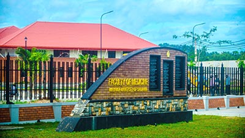

Vision
To be a leading higher education institute in Sri Lanka recognized for its outstanding academic programmes, innovative research, scholarship and outreach with the ultimate target of serving the mankind.

Mission
To develop highly qualified and responsible citizens who contribute to the improvement of society and sustainable development of the country.

Wayamba University of Sri Lanka (WUSL) is one of the latest and modern learning and research institutions in Sri Lanka. The degree programmes offered at Wayamba University are different from others as it offers students much more than a mere educational qualification. Curricular of the University aim at providing students a total holistic approach to one of a kind educational experience that enables them to achieve career goals along with creativity and innovativeness. The graduates are expected be employable individuals as well as valuable citizens who will be of benefit to the society. The high practical content and opportunities for inplant/industrial training are characteristic features of our undergraduate study programmes which results in a good record of graduate employment. Wayamba University is located at two premises- Kuliyapitya and Makandura with easy access from Colombo, Kurunegala, and Kandy. The two locations are situated in an ideal environment with food and agribusiness, and industrial and commercial activities. The University has established links with national and regional industries, business establishments, research institutes and government and non-government organizations. The University has initiated several research activities with industry collaborations.
